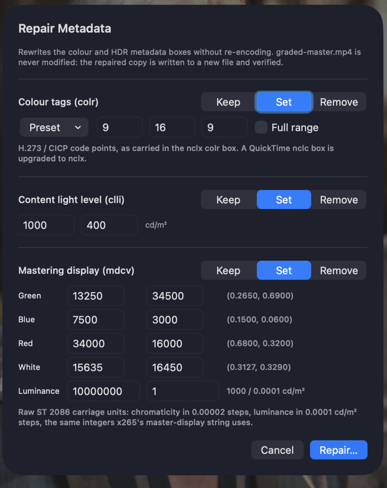
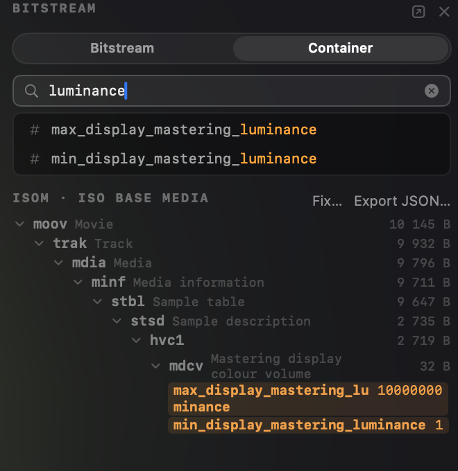

Workflow · Metadata repair
A graded HDR deliverable bounces QC over a wrong or missing color tag, and the pixels were never the problem. Videre rewrites the color tags, the mastering display volume, and the content light level of an MP4 or MOV without re-encoding: read what the file actually carries, repair it from a pre-filled sheet or one command, and save a copy whose video and audio are verified byte-identical before the save succeeds.

A wrong tag bounces a right master
The grade is correct. The file says otherwise. A player believes the file.
An HDR deliverable carries its meaning in container metadata. The color tags declare which primaries, transfer, matrix, and range the pixels are coded in; the mastering display volume (SMPTE ST 2086) records the display the grade was made on; MaxCLL and MaxFALL summarize how bright the content gets. Players and QC tools read those boxes, not your intent. When one is missing or wrong, the pixels get interpreted under the wrong assumptions, the QC report flags the file, and the delivery comes back.
The pixels themselves are fine. A wrong tag is a labeling error, yet the usual fix is a full re-encode: hours of render time and a generation of quality spent to change a few dozen bytes of metadata. Videre edits those bytes directly. The video and audio data are not touched, and the output is checked against the original before the save succeeds.
The repair, step by step
Bounce email to redelivery in four steps. No render queue involved.
colr, mdcv, and clli, with every field decoded. The bitstream inspector reads the color signalling inside the coded stream too, so a container problem and a bitstream problem are distinguishable before you pick the fix.master-display string uses, with the derived chromaticities and cd/m² shown beside them.videre retag takes the presets, an x265-style master-display string, and per-track selection, so the fix drops into the script that already packages the deliverable. Minutes instead of a re-render.What it rewrites, and what it doesn't
Three boxes, each independently kept, set, or removed. Edits apply to every video track; the CLI's --track picks one.
Scope: both layers. Color signalling also lives inside the coded stream itself (VUI in the parameter sets, SEI messages), and decoders prefer it over the container tags, so every fix carries a scope control: container, bitstream, or both. Both is the default, so the layers agree after a repair. The container and bitstream inspectors show both layers side by side, so where the two disagree you see it before you pick the fix.

In a delivery script
The app and the command line share one engine, so a scripted repair behaves exactly like the sheet, verification included:
videre retag graded.mov -o graded-fixed.mov --colr bt2020-pq \
--cll 1000,400 \
--master-display "G(13250,34500)B(7500,3000)R(34000,16000)WP(15635,16450)L(10000000,1)"videre retag --help lists the edit flags, including --remove-colr / --remove-clli / --remove-mdcv for stripping a box, and --track for multi-track files.
Fix the label, keep the master
A bounced deliverable does not have to go back through the render queue. Read what the file carries, correct the tags from the sheet or the command line, and send an output whose pixels are the ones you graded, verified byte for byte. The full reference, including every field and preset, is in the user guide.